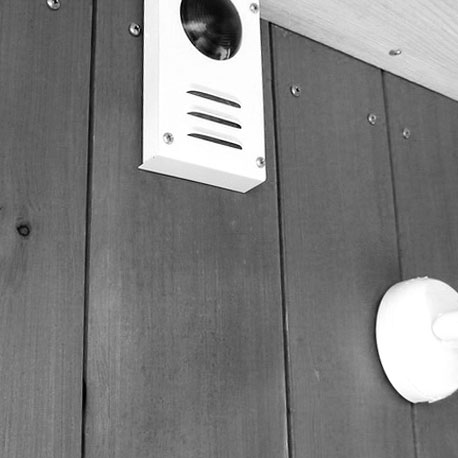

Наши помощники уже работают!
Частный дом,
площадью
1500 м2
-
Управляемое освещение
Внутренняя отделка дома выполнена из полупрозрачного натурального камня (оникса). Элементы каменной инкрустации декоративно подсвечены. Художественный свет выделяет определенные элементы каменного рисунка, что позволяет создавать множество разнообразных форм восприятия дизайна. Световые сценарии могут быть созданы пользователем по своему настроению. Система контроля присутствия включает заданный световой стиль в комнате, если в ней находятся люди. Через заданное время после ухода людей из комнаты система переключает освещение в дежурный режим, предварительно заданный пользователем. В случае необходимости пользователь может в ручную выбрать любые световые конфигурации, отключив автоматический режим.
Аналогично решена задача ландшафтного и фасадного освещения. Созданный пользователем сценарии автоматически включаются с наступлением сумерек и могут быть произвольно переключены вручную.
-
Неуправляемое освещение
Внутренняя отделка дома выполнена из полупрозрачного натурального камня (оникса). Элементы каменной инкрустации декоративно подсвечены. Художественный свет выделяет определенные элементы каменного рисунка, что позволяет создавать множество разнообразных форм восприятия дизайна. Световые сценарии могут быть созданы пользователем по своему настроению. Система контроля присутствия включает заданный световой стиль в комнате, если в ней находятся люди. Через заданное время после ухода людей из комнаты система переключает освещение в дежурный режим, предварительно заданный пользователем. В случае необходимости пользователь может в ручную выбрать любые световые конфигурации, отключив автоматический режим.
-
Необузданное освещение
Внутренняя отделка дома выполнена из полупрозрачного натурального камня (оникса). Элементы каменной инкрустации декоративно подсвечены. Художественный свет выделяет определенные элементы каменного рисунка, что позволяет создавать множество разнообразных форм восприятия дизайна. Световые сценарии могут быть созданы пользователем по своему настроению. Система контроля присутствия включает заданный световой стиль в комнате, если в ней находятся люди. Через заданное время после ухода людей из комнаты система переключает освещение в дежурный режим, предварительно заданный пользователем. В случае необходимости пользователь может в ручную выбрать любые световые конфигурации, отключив автоматический режим.
Аналогично решена задача ландшафтного и фасадного освещения. Созданный пользователем сценарии автоматически включаются с наступлением сумерек и могут быть произвольно переключены вручную.
-
Невероятное освещение
Внутренняя отделка дома выполнена из полупрозрачного натурального камня (оникса). Элементы каменной инкрустации декоративно подсвечены.
Художественный свет выделяет определенные элементы каменного рисунка, что позволяет создавать множество разнообразных форм восприятия дизайна. Световые сценарии могут быть созданы пользователем по своему настроению. Система контроля присутствия включает заданный световой стиль в комнате, если в ней находятся люди. Через заданное время после ухода людей из комнаты система переключает освещение в дежурный режим, предварительно заданный пользователем. В случае необходимости пользователь может в ручную выбрать любые световые конфигурации, отключив автоматический режим.
Аналогично решена задача ландшафтного и фасадного освещения.
-
Неординарное освещение
Внутренняя отделка дома выполнена из полупрозрачного натурального камня (оникса). Художественный свет выделяет определенные элементы каменного рисунка, что позволяет создавать множество разнообразных форм восприятия дизайна. Световые сценарии могут быть созданы пользователем по своему настроению. Система контроля присутствия включает заданный световой стиль в комнате, если в ней находятся люди. Через заданное время после ухода людей из комнаты система переключает освещение в дежурный режим, предварительно заданный пользователем. В случае необходимости пользователь может в ручную выбрать любые световые конфигурации, отключив автоматический режим.
Созданный пользователем сценарии автоматически включаются с наступлением сумерек и могут быть произвольно переключены вручную.
-
Контроль влажности в прачечной
-

Контроль влажности в чебуречной
-
Контроль влажности в шашлычной
-
Контроль влажности в парикмахерской
-
Контроль влажности в сточной
-
Контроль влажности в колбасном цехе
-
Контроль влажности в сосисочной
-
Контроль влажности в булочной
-
Контроль влажности в билльярдной
-
Контроль влажности в гараже
-
Контроль влажности в будуаре
Преимущества работы с ними
-
Безусловно, обустройство Умного Дома требует затрат, однако правильнее будет называть их инвестициями. Наша система сделает все возможное, чтобы повысить уровень энергосбережения и снизить ваши расходы. Она способна:
- звукового и светового оповещения
- отправки SMS или голосового сообщения на Ваш телефон или телефон доверенного лица
- передачи тревожного сигнала на пост охраны или в соответствующие службы
- воздействия непосредственно на источник угрозы
-
Умный Дом может реагировать на те или иные отклонения от нормы посредством:
- звукового и светового оповещения
- отправки SMS или голосового сообщения на Ваш телефон или телефон доверенного лица
- передачи тревожного сигнала на пост охраны или в соответствующие службы
- воздействия непосредственно на источник угрозы
Говорят, что безопасности много не бывает. Но в Умном Доме – бывает.
Наша централизованная система способна быстро распознать:
- пожар
- утечку газа или воды
- отказ системы отопления
- несанкционированное вторжение
- открытие окон и дверей
- отключение электричества
- отказ дизель-генераторной установки
-
Что может сделать дом комфортнее, чем современная и правильно настроенная автоматика? Наши системы умеют:
- закрывать мансардные окна, если начался дождь
- выполнять команды, поступающие с вашего мобильного телефона, планшета или компьютера
- распознавать номера машин хозяев и гостей
- моментально реагировать с помощью датчиков движения
- окружать вас любимой музыкой в доме и во дворе
- создавать настроение красивым освещением гостиной и спальни
- ночью и днем следить за безопасностью дома и его обитателей
- встречать гостей праздничной подсветкой дома и лужаек
- вовремя предупреждать об аварии в котельной или в электрощитовой
Система может стать вашим дворецким
Вам достаточно будет один раз настроить расписание и он будет заранее включать различные системы. В зависимости от времени суток, температуры, освещенности он закроет, или откроет окна, двери, или ворота.
Функция дизайнера
Встречайте гостей в яркой атмосфере вечеринки, созданной Вашим личным дизайнером. Кстати, в отличие от живого дизайнера, он может быстро организовать романтичное и мягкое освещение спальни, не появляясь в ней в неподходящий момент.
Ди-джей к вашим услугам
Ваш совершенный музыкальный вкус в надежных руках: профессиональный ди-джей в лице Вашего дома как никто другой знает, что Вы любите. Кроме того, в нужный момент он с удовольствием исполнит обязанности киномеханика.
Педантичная экономка
Вышеописанную мужскую компанию отлично дополняет совершенная в своей внимательности экономка. Она точно знает, когда нужно выключать воду, отопление и электроприборы. Кроме того, мы уверены, что она никогда не даст Вашей супруге повода для ревности.
Чуткий пожарный
Будем надеяться, что в этом амплуа Вашему дому выступить не доведется. Однако знайте, что при малейших признаках задымления или повышения температуры, он немедленно оповестит соответствующие службы и Вас лично.
Вежливый охранник
Умный нарушитель едва ли попытается незаконно проникнуть в Умный Дом. Ну а что до прочих, то оставим их на совесть бдительного охранника, круглосуточно следящего за Вашими владениями зоркими глазами-камерами.
Умная система управления вашим домом
Выходя из дома, вы часто спрашиваете себя – не забыт ли где-то в комнате включенный свет? И вынуждены проходить по всем помещениям с целью проверки. Хотите подчеркнуть тонкий дизайн Вашей гостиной? Это будет нелегко без правильно выбранной подсветки. Вы уехали в отпуск и волнуетесь о сохранности Вашего имущества? Ваш дом может демонстрировать Ваше присутствие, включая освещение в обычном режиме. Это может отпугнуть воров.
{kind=link}
{kind=link}
{kind=link}
{kind=link}